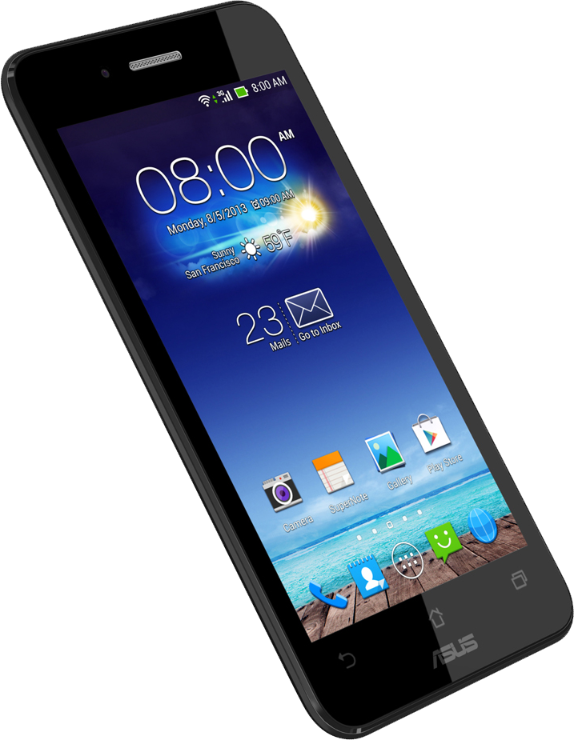

- Смартфон
- Компьютер
- Ноутбук

Смартфо́н (англ. smartphone — умный телефон) — мобильный телефон, дополненный функциональностью карманного персонального компьютера.
Также коммуникатор (англ. communicator, PDA phone) — карманный персональный компьютер, дополненный функциональностью мобильного телефона.
Компью́тер (англ. computer, МФА: [kəmˈpjuː.tə(ɹ)][1] — «вычислитель») — устройство или система, способная выполнять заданную, чётко определённую, изменяемую последовательность операций. Это чаще всего операции численных расчётов и манипулирования данными, однако сюда относятся и операции ввода-вывода. Описание последовательности операций называется программой[2].
 Ноутбук (англ. notebook — блокнот, портативный ПК) — переносной персональный компьютер, в корпусе которого объединены типичные компоненты ПК, включая дисплей, клавиатуру и устройство указания (обычно сенсорная панель или тачпад), а также аккумуляторные батареи. Ноутбуки отличаются небольшими размерами и весом, время автономной работы ноутбуков варьируется в пределах от 2 до 15 часов.
Ноутбук (англ. notebook — блокнот, портативный ПК) — переносной персональный компьютер, в корпусе которого объединены типичные компоненты ПК, включая дисплей, клавиатуру и устройство указания (обычно сенсорная панель или тачпад), а также аккумуляторные батареи. Ноутбуки отличаются небольшими размерами и весом, время автономной работы ноутбуков варьируется в пределах от 2 до 15 часов.